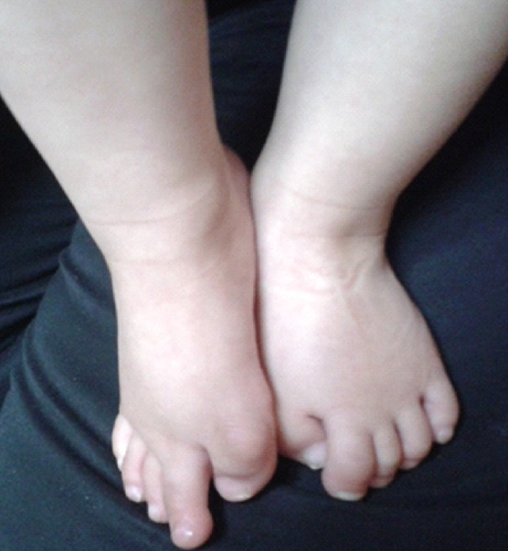

Doctor's Report
Part 1
Fibrodysplasia ossificans progressiva is a genetic condition that slowly undergoes heterotopic ossification, characterized by the severe disabling due to unusual bone growth. Some alternate symptoms that victims may deal with typically include malformed big toes or intense swelling around the body, however scientists have noted the possibility of a range of other features such as short thumbs, deafness, scalp baldness, mild mental retardation and many other conditions that may affect the child negatively. The condition is actually noted as one of the rarest in the world, only appearing in 0.61 out of each 1 million children. The disease can appear in all ethnic groups however it is shown to have a predilection for males at a proportion of 4:1.
While currently there is no cure for the disease, professionals have stated that there is research in progress to discover treatment options. Thus, while treatment options may not exist when the child is born, there is a chance that something might arise during the child’s lifetime. Organizations like BioCryst and Regeneron have shown progress in discovering treatment options. As recent as 21 December 2020, BioCryst has reported positive results on a Phase 1 test conducted with an oral inhibitor.